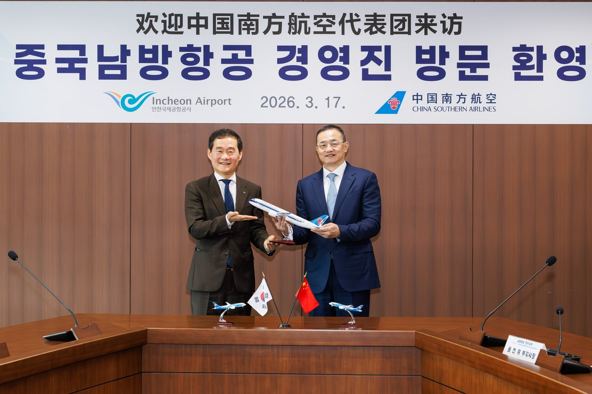
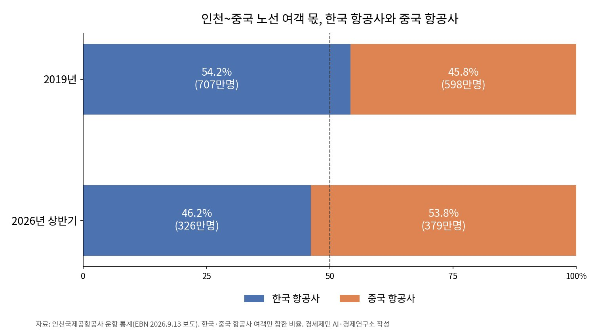

[글로벌 인천공항⑭] 한중 노선 국적사 몫 54%→46%, 베이징·상하이 늘려야
7년 만에 운수권 주 70회 확대, 여객 608회→664회
상반기 동방·남방·국제항공 272만명, 대한항공의 1.9배
한국 전역 대 산둥·하이난, 기울어진 2006년 교환
AI경세제민=김갑봉 기자 | 한국과 중국이 7년 만에 하늘길을 넓혔다. 국토교통부는 5월 27일부터 이틀간 서울에서 열린 한중 항공회담에서 두 나라 운수권을 주 70회 늘리기로 했다고 6월 4일 밝혔다. 여객은 주 608회에서 664회로, 화물은 주 54회에서 68회로 는다.
하늘길이 7년간 묶인 사이 인천~중국 노선의 주인은 바뀌었다. 인천국제공항공사 운항 통계를 인용한 보도를 보면 올해 상반기 이 노선의 한국·중국 항공사 여객 가운데 국적항공사 몫은 46.2%였다. 2019년 54.2%에서 8%포인트 내려가 중국 항공사에 밀렸다.
항공 노선은 두 나라가 협정으로 주고받는 운수권에서 나온다. 하늘을 넓힐수록 국적사에 유리한지는 따로 따져야 한다. 하늘은 두 나라의 이해타산이 맞을 때 넓어지고, 그 이익은 미리 준비한 쪽으로 간다.

일본 줄인 중국 항공사, 운수권 모자란 한국
에이비에이션위크가 인용한 항공 분석업체 OAG 자료를 보면 중국 항공사는 올여름 일본 노선 공급을 59% 줄이고 한국 노선은 17.4% 늘렸다. 중국 항공사는 일본에서 뺀 공급을 옮길 시장이, 한국은 인기 노선 증편 여지가 필요했다. 늘어난 운수권은 두 나라 항공사가 함께 쓴다.
항공정보포털 통계로 올해 상반기 한중 여객은 954만명으로 한 해 전보다 22.3% 늘었고, 3분기에도 23.9% 늘었다. 기존 운수권을 다 써서 인천~상하이·광저우 같은 인기 노선은 증편이 어려웠다. 지방공항에서 베이징·상하이 밖 중국 도시로 가는 운수권도 주 87회에서 101회로 늘었다.
인천~베이징은 주 45회에서 52회로, 인천~상하이는 56회에서 63회로 늘었다. 광저우·다롄·청두·하얼빈도 주 7회씩 늘었다. 국토교통부의 9월 16일 배분에서 인천~베이징에는 저비용항공사인 이스타항공과 제주항공이 주 7회씩 들어갔다.
인천~중국 여객, 중국 항공사 53.8%로 역전
2019년 인천~중국 노선에서 한국 항공사 여객은 707만명으로 중국 항공사 598만명보다 많았다. 올해 상반기에는 중국 항공사가 379만명으로 53.8%를 차지했고 한국 항공사는 326만명에 그쳤다.
상반기 1위는 대한항공 약 145만명이지만 2~4위는 중국동방항공 약 115만명, 중국남방항공 약 97만명, 중국국제항공 약 60만명이 차지했다. 중국 3대 항공사를 합하면 약 272만명으로 대한항공의 1.9배다.
중국 항공사는 공급을 더 늘리려 한다. 공사가 3월 18일 밝힌 자료를 보면 중국남방항공은 올해 하계 인천~중국 노선에 역대 최다인 1만2400여편, 214만석을 공급하기로 했다.

자유화의 이익은 이길 수 있는 쪽으로
자유화의 이익은 저절로 나뉘지 않는다. 캐나다의 33개 양국 시장 1982~1994년 자료를 분석한 연구를 보면 한 시장에 자국 항공사 둘을 띄우자 전체 여객과 자국 몫이 함께 늘었다. 같은 연구는 두 자국 항공사가 합병하면 자국 몫이 준다고 봤다.
동북아 항공시장을 분석한 2015년 연구는 중국 규제가 국유 대형 항공사의 시장지배력을 키우고 허브 공항 노선의 자유화는 당분간 제한될 것으로 봤다. 중국 항공사가 강한 아세안·오세아니아·유럽과는 덜 저항할 것으로 내다봤는데, 이길 수 있는 시장부터 연다는 뜻이다.
자유화가 중국 항공사를 위협한 사례도 있다. 중국·아세안 항공자유화 뒤 동남아 저비용항공사가 중국 대도시로 몰려들었다. 2018년 연구는 중국이 자국 저비용항공사를 키우지 않으면 이 시장 대부분을 내줄 위기라고 경고했다. 문만 연다고 이기지는 못한다.
한중 하늘도 셈법으로 열렸다. 2006년 회담에서 한국은 전 지역을, 중국은 산둥성을 열어 시범 자유화에 합의했고 산둥 밖 여객 노선도 주 204회에서 401회로 늘렸다. 전면 자유화 약속은 중국이 합의문 해석을 달리하며 멈췄다.
2014년 국내 연구는 이 합의 뒤 2007~2008년 운항과 수송량, 노선 수가 유의하게 늘었다고 봤다. 다만 금융위기 뒤까지 넓혀 보면 뚜렷한 차이가 없었다. 문을 연 효과도 수요가 받쳐 줄 때 이어진다.
서로 이해 맞는 교환, 국적사 몫 되찾을 조건
첫째 조건은 기울지 않은 맞교환이다. 2006년 한국은 전 지역을 열고 국내 기업 1만여곳이 진출한 산둥과, 중국이 2003년 이미 일방 개방한 하이난을 받았다. 지방공항 노선을 내주는 만큼 중국이 쉽게 열지 않는 베이징·상하이·광저우 같은 허브 노선 증편을 받아내야 한다.
둘째는 국적사 복수 지정이다. 12월 17일 대한항공과 아시아나항공이 하나로 합친다. 중국 경쟁당국도 결합을 승인하며 인천~베이징·상하이에 신규 항공사가 들어오면 슬롯을 넘기라는 조건을 달았다. 합병의 그늘은 9월 운수권을 받은 저비용항공사가 실제로 날아야 메워진다.
셋째는 중국 항공사의 공급을 인천의 환승 수요로 바꾸는 장치다. 공사는 남방항공에 인천~중국 환승을 늘리는 인터라인 지원 프로그램 참여를 제안했다. 중국 항공사가 실어 온 손님이 인천에서 갈아타면 인천 허브도 몫을 얻는다.
중국은 자국 항공사가 이기는 곳부터 연다. 한국도 국적사가 이길 수 있는 노선과 맞바꿔야 한다. 주고받는 셈법이 맞아야 하늘이 넓어진다. 운수권을 늘리는 일만큼 그 운수권으로 누가 날지가 중요하다.
참고문헌
기관 자료
- 인천국제공항공사, 「인천공항공사, 중국남방항공과 협력으로 한-중 하늘길 넓힌다」(보도자료), 2026년 3월 18일. https://www.airport.kr/bbs/co_ko/84/139286/artclView.do
- 국토교통부, 「7년 만에 한-중 운수권 확대」(보도자료), 2026년 6월 4일. https://www.molit.go.kr/USR/NEWS/m_71/dtl.jsp?id=95092077
- 국토교통부, 「[참고] 대한항공-아시아나항공 합병 인가, 26년 12월 17일부터 대한항공으로 통합 예정」, 2026년 6월 25일. https://www.molit.go.kr/USR/NEWS/m_71/dtl.jsp?id=95092156
- 국토교통부, 「2026년도 국제항공운수권 수시 배분결과」(보도자료), 2026년 9월 16일. https://www.molit.go.kr/USR/NEWS/m_71/dtl.jsp?id=95092425
- 국토교통부 항공정보포털, 항공통계 상세조회(지역·국가별 국제선 여객, 중국, 2025·2026년 상반기와 3분기). https://www.airportal.go.kr/stats/transport/chartDetail4.do
연구 논문
- Clougherty, J. A., Dresner, M., & Oum, T. H., "An empirical analysis of Canadian international air policy: effects of dual carrier designation and partial liberalization", 『Transport Policy』 8(3), 2001년, pp.219-230. https://doi.org/10.1016/S0967-070X(01)00015-4
- 정현숙·김인주·이진, 「항공자유화 협정이 한·중 시장에 미친 영향에 관한 실증 연구」, 『한국항공운항학회지』 22(1), 2014년, pp.136-144. https://doi.org/10.12985/ksaa.2014.22.1.136
- Fu, X., Oum, T. H., Chen, R., & Lei, Z., "Dominant carrier performance and international liberalization – The case of Northeast Asia", 『Transport Policy』 43, 2015년, pp.61-75. https://doi.org/10.1016/j.tranpol.2015.05.010
- Liu, S., & Oum, T. H., "Prospects for air policy liberalization in China as a result of China-ASEAN Open Skies: Changing role of Chinese mega carriers in global scene and anticipated low cost carrier competition", 『Transport Policy』 72, 2018년, pp.A1-A9. https://doi.org/10.1016/j.tranpol.2018.08.001
언론 보도
- 송두영, "韓·中 하늘길 더 넓어진다", 한국일보, 2006년 6월 17일. https://www.hankookilbo.com/news/article/200606170059346677
- David Casey, "China, South Korea Boost Air Services"(OAG 공급 분석 인용), Aviation Week, 2026년 6월 4일. https://aviationweek.com/air-transport/airports-networks/china-south-korea-boost-air-services
- 김태준, "중국 운수권 배분 임박…'안정적 운항 역량 갖춘 항공사 선별해야'"(인천국제공항공사 운항 통계, 중국 경쟁당국 결합 승인 조건 인용), EBN, 2026년 9월 13일. https://www.ebn.co.kr/news/articleView.html?idxno=1724027
[사진 출처]
- [사진1] 인천국제공항공사, 「인천공항공사, 중국남방항공과 협력으로 한-중 하늘길 넓힌다」(보도자료) 별첨1 사진, 2026년 3월 18일. https://www.airport.kr/bbs/co_ko/84/139286/artclView.do
- [도표1] 경세제민 AI·경제연구소 작성. 자료는 위 EBN 보도가 인용한 인천국제공항공사 운항 통계(한국·중국 항공사 여객만 합한 비율)
※ 이 기사는 AI 프로그램 클로드를 활용해 작성했습니다.
관련기사
- [글로벌 인천공항⑬] 인천공항 44% 외국인, 연말 끝나는 비자 특례 상설로
- 착륙료 10년·계류장 25년 묶은 인천공항, 싼 값이 항공사를 붙잡는가
- 두바이 막힌 사이 유럽 환승 63%↑, 인천공항 빌린 환승객 붙잡아야
- 나리타 환승 6%↓ 인천 20%↑, 도쿄와 다투는 일본발 미주 환승
저작권자 © AI경세제민 무단전재 및 재배포, AI학습 및 활용 금지